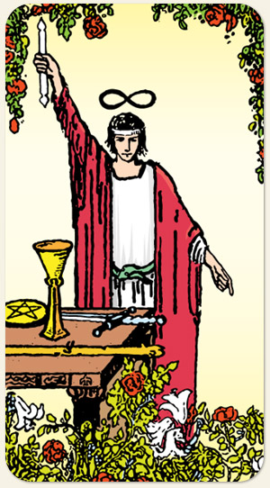

Você tem todos os recursos que precisa, mas não precisa gastar todas as fichas de uma só vez. Elevar o campo mental, ascender, transcender. Existem três cartas onde o fundo amarelo é adornado com flores: Mago, Rainha de Ouros e Quatro de Paus.
Positivo: Iniciativa, proatividade, criatividade, razão, capacidade, estudar os recursos, resolver problemas, movimentar-se para alcançar bons resultados, encontrar a solução, ser inventivo, alcançar os mistérios do alto, empolgar, entusiasmar.
Negativo: Muitas ideias e nenhuma ação, procrastinação, imaturidade, falta de criatividade, falta de recursos ou mau uso deles.
Amor e Sexo: As estreias, as primeiras vezes da vida, o primeiro beijo, recomeços, novos movimentos, a inexperiência de um aprendiz, o início de um relacionamento. Pessoa superficial, sem muitas ideias, é o inverso da Leminiscata.
Trabalho e Dinheiro: Pessoa obcecada por uma ideia: passa o dia no laboratório, oficina, misturando tudo, não para nem para comer, hiperfoco. Os primeiros cargos em uma empresa ou carreira, o estagiário, o júnior ou o trainee. Investir em equipamento, em infraestrutura, em treinamento. Pessoa monotarefa, fazer milagres para dar conta de algo, ilusionistas, enganadores. Ter só o básico, o kit sobrevivência, só fazer o necessário e não se aprofundar.
Espiritualidade: Pessoas ligadas à magia, iniciados em alguma religião ou ordem esotérica. Negligenciar compromissos, mentores espirituais ou obsessores, ser prejudicado por magia negativa. Encantamentos, sortilégios, rituais, uso de elementos, uso de folhas. Intervenções que podem ser resolvidas por meio de rituais.
Símbolos: Leminiscata, Os Quatro Elementos, Bastão de Duas Pontas, Ourobouros, Rosa Vermelha, Lírios Brancos, Mesa.
Cores: Amarelo, Vermelho, Azul, Verde, Branco.
Elementos: Ar e Espírito.